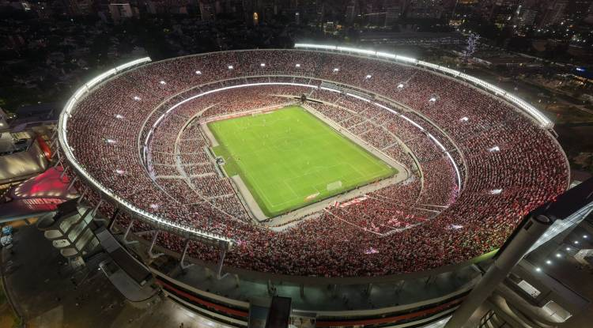
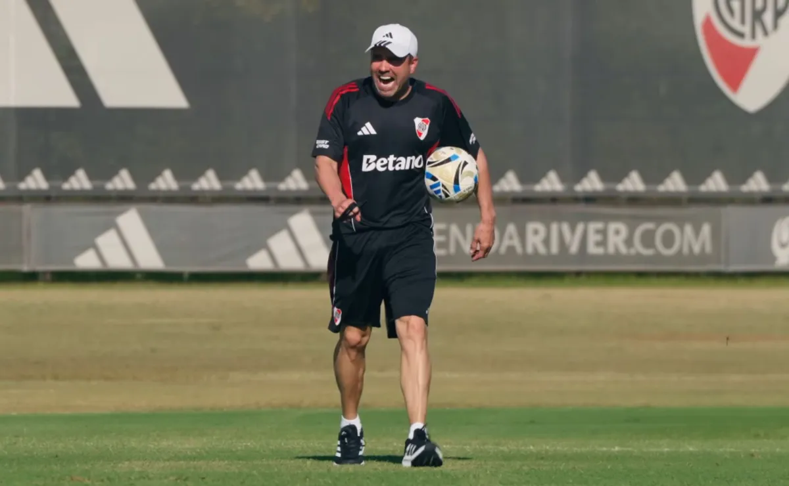
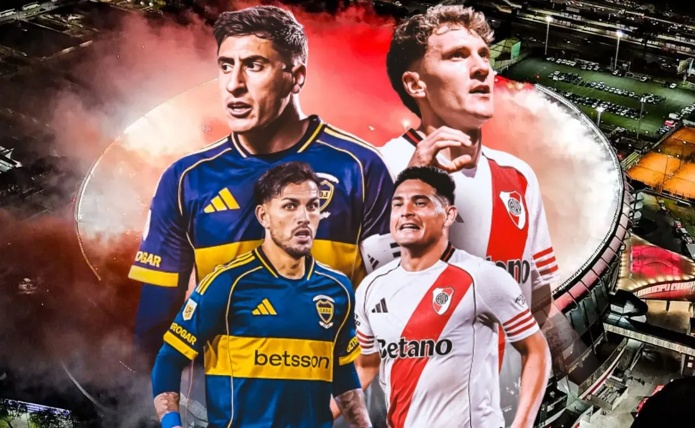
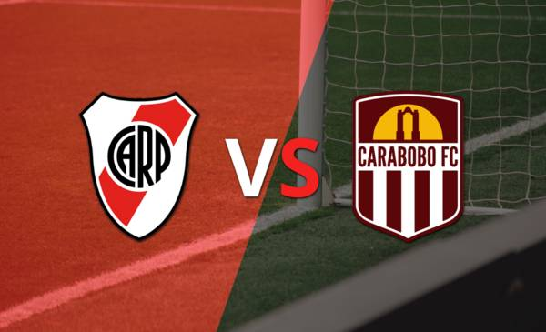
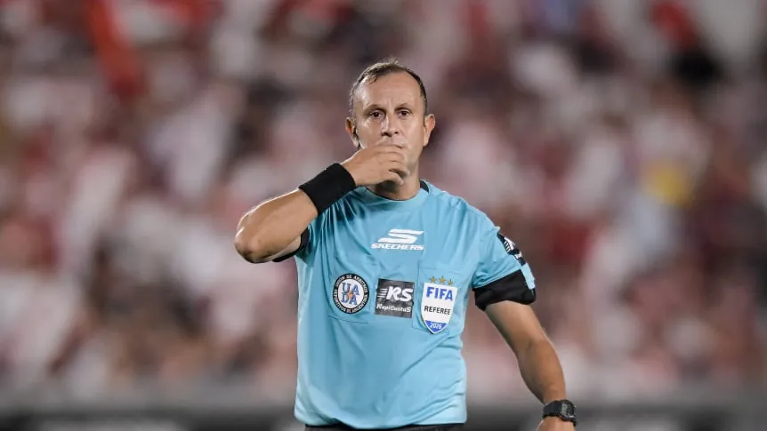

Bienvenidos a la pagina del club mas convocante del mundo
En esta página encontrarás toda la información sobre el Club Atlético River Plate, su historia, sus títulos y mucho más. ¡Vamos el Millonario!


Posible equipo de cara al partido de copa
Luego de la victoria frente a la academia de visitante, el equipo dirigido por chacho se prepara de cara a el partido de copa previo al Superclasico.

A menos de una semana del partido del año
A tan solo 6 dias para el superclasico, tanto River como Boca se preaparan para este patidazo con un encuentro de copa en el medio.

River busca afirmarse ante Carabobo
El Millonario enfrenta un duelo clave por copa ante el lider del grupo mientras ajusta detalles antes del superclásico.

Confirmado el árbitro para el superclásico
Ya se definió quién impartirá justicia en el esperado choque entre River y Boca.